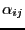
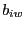

Next: Relaxation-Labelling Constraint Grammar File Up: Part-of-Speech Tagger Module Previous: Part-of-Speech Tagger Module Contents
This file contains the statistical data for the Hidden Markov Model, plus some additional data to smooth the missing values. Initial probabilities, transition probabilities, lexical probabilities, etc.
The file may be generated by your own means, or using a tagged corpus and the script src/utilitities/TRAIN provided in FreeLing package. See comments in the script file to find out which format the corpus is expected to have.
The file has seven sections: <Tag>, <Bigram>,
<Trigram>, <Initial>, <Word>,
<Smoothing>, and <Forbidden>. Each section is
closed by it corresponding tag </Tag>, </Bigram>,
</Trigram>, etc.
The tag (unigram), bigram, and trigram probabilities are used in Linear Interpolation smoothing by the tagger to compute state transition probabilities ( parameters of the HMM).
<Tag>. List of unigram tag probabilities
(estimated via your preferred method). Each line is a tag probability P(t) with format
Lines for zero tag (for initial states) and for x (unobserved tags) must be included.
E.g.
0 0.03747
AQ 0.00227
NC 0.18894
x 1.07312e-06
<Bigram>. List of bigram
transition probabilities (estimated via your preferred method).
Each line is a transition probability, with the format:
Tag zero indicates sentence-beggining.
E.g. the following line indicates the transition probability between a
sentence start and the tag of the first word being AQ.
0.AQ 0.01403
E.g. the following line indicates the transition probability between two
consecutive tags.
AQ.NC 0.16963
<Trigram>. List of trigram
transition probabilities (estimated via your preferred method).
Each line is a transition probability, with the format:
Tag zero indicates sentence-beggining.
E.g. the following line indicates the probability that a word
has NC tag just after a 0.AQ sequence.
0.AQ.NC 0.204081
E.g. the following line indicates the probability of a tag SP appearing after two words tagged DA and NC.
DA.NC.SP 0.33312
<Initial>. List of initial state probabilities
(estimated via your preferred method), i.e. the Each InitialState is a PoS-bigram code with the form 0.tag. Probabilities are given in logarithmic form to avoid underflows.
E.g. the following line indicates the probability that the
sequence starts with a determiner.
0.DA -1.744857
E.g. the following line indicates the probability that the
sequence starts with an unknown tag.
0.x -10.462703
<Word>. Contains a list of word probabilities
P(w) (estimated via your preferred method). It is used, toghether with
the tag probabilities above, to compute emission probabilities
( parameters of the HMM).
Each line is a word probability P(w) with format word
LogProbability. A special line for <UNOBSERVED_WORD> must
be included. Sample lines for this section are:
afortunado -13.69500
sutil -13.57721
<UNOBSERVED_WORD> -13.82853
<Smoothing> contains three lines with the coefficients
used for linear interpolation of unigram (c1), bigram (c2),
and trigram (c3) probabilities.
The section looks like:
<Smoothing>
c1 0.120970620869314
c2 0.364310868831106
c3 0.51471851029958
</Smoothing>
<Forbidden> is the only that is not
generated by the training scripts, and is supposed to be manually
added (if needed).
The utility is to prevent smoothing of some combinations that are
known to have zero probability.
Lines in this section are trigrams, in the same format than above:
Tag1.Tag2.Tag3
Trigrams listed in this section will be assigned zero probability, and no smoothing will be performed. This will cause the tagger to avoid any solution including these subsequences.
The first tag may be a wildcard (*), which will match any tag, or
the tag 0 which denotes sentence beginning. These two special tags
can only be used in the first position of the trigram.
In the case of an EAGLES tagset, the tags in the trigram may be either
the short or the long version.
The tags in the trigram (except the special tags * and 0)
can be restricted to a certain lemma, suffixing them with the lemma in
angle brackets.
For instance, the following rules will assign zero probability to any sequence containing the specified trigram:
*.PT.NC: a noun after an interrogative pronoun.
0.DT.VMI: a verb in indicative following a determiner just after sentence beggining.
SP.PP.NC: a noun following a preposition and a personal pronoun.
Similarly, the set of rules:
*.VAI<haber>.NC
*.VAI<haber>.AQ
*.VAI<haber>.VMP00SF
*.VAI<haber>.VMP00PF
*.VAI<haber>.VMP00PM
will assign zero probability to any sequence containing the verb ``haber'' tagged as an auxiliar (VAI) followed by any of the listed tags. Note that the masculine singular participle is not excluded, since it is the only allowed after an auxiliary ``haber''.
Lluís Padró 2010-09-02